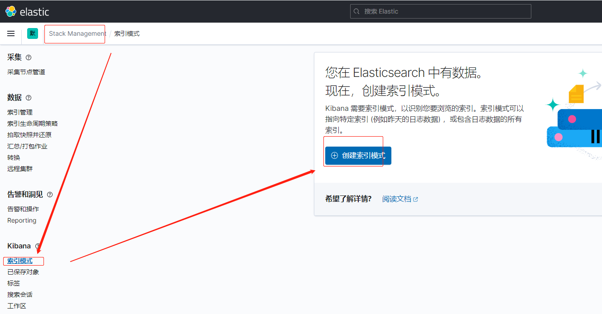
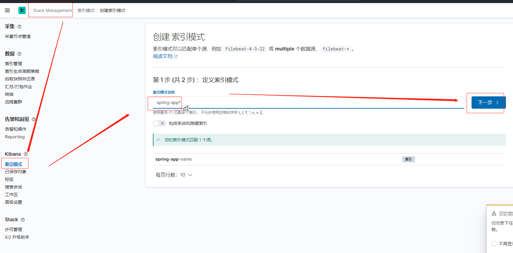
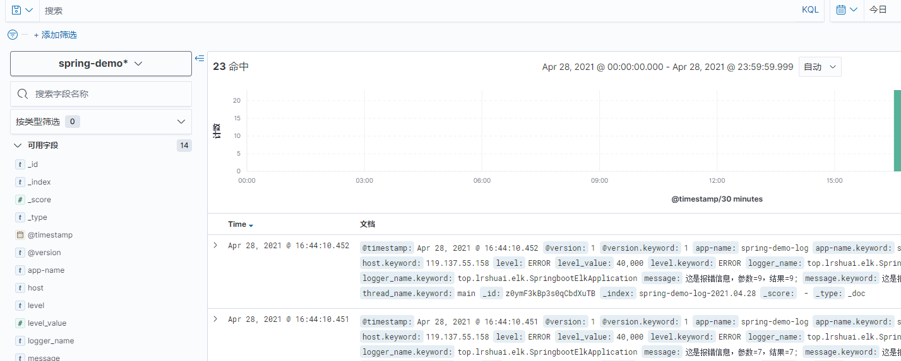

前言
- ElasticSearch和Logstash都是需要Java 环境的
- 所以需要预先安装好Jdk(或者使用他们的包自带的jdk)
- 安装JDK:Lilnux安装JDK
一、安装Elasticsearch
- 可以看我几百年前的文章：ElasticSearch 的安装
- 可能报错的解决：ES安装问题集锦
- 或者现在最新的安装方法：
wget https://artifacts.elastic.co/downloads/elasticsearch/elasticsearch-7.12.0-linux-x86_64.tar.gz
tar -zxvf elasticsearch-7.12.0-linux-x86_64.tar.gz -C /usr/local/
mv elasticsearch-7.12.0 elasticsearch
cd elasticsearch
1、修改Elasticsearch配置
- 修改：
/usr/local/elasticsearch/config/elasticsearch.ymlcluster.name: "mySearch"
node.name: "myNode1"
cluster.initial_master_nodes: ["myNode1"]
# 跨域问题
http.cors.enabled: true
http.cors.allow-origin: "*"
#http.cors.allow-headers: Authorization
network.host: 0.0.0.0
http.port: 9200
transport.tcp.port: 9300
2、给Elasticsearch创建一个启动用户
- 因为ES不能使用root用户启动
- 所以新建一个elastic用户来启动
useradd -d /home/elastic -m -g root elastic
passwd elastic
chown -R elastic:root elasticsearch
3、修改系统的一些限制配置
vi
/etc/sysctl.conf# 限制一个进程可以拥有的VMA(虚拟内存区域)的数量
vm.max_map_count=655360然后执行：
sysctl -p看看效果vi
/etc/security/limits.conf* soft nofile 65536
* hard nofile 65536
* soft nproc 2048
* hard nproc 4096修改完，重启系统
二、安装kibana
- kibana就是ES的可视化界面
1、下载kibana
- 下载地址：https://www.elastic.co/cn/downloads/kibana
- 下载成功后，解压即可
wget https://artifacts.elastic.co/downloads/kibana/kibana-7.12.0-linux-x86_64.tar.gz
tar -zxvf kibana-7.12.0-linux-x86_64.tar.gz -C /usr/local/
cd /usr/local/
mv kibana-7.12.0-linux-x86_64 kibana
cd kibana
2、配置kibana
- 进入kibana目录修改config下的
kibana.yml配置文件server.port: 5601
server.host: "0.0.0.0"
i18n.locale: "zh-CN"
#elasticsearch.hosts: ["http://localhost:9200"]
#elasticsearch.username: "kibana_system"
#elasticsearch.password: "pass"
3、启动kibana
- kibana 默认前台启动
# 启动 kibana
/usr/local/kibana/bin/kibana
# 后台启动
mkdir /usr/local/kibana/logs
nohup /usr/local/kibana/bin/kibana --allow-root >/usr/local/kibana/logs/kibana.log 2>&1 &
nohup /usr/local/kibana/bin/kibana >/usr/local/kibana/logs/kibana.log 2>&1 &
三、安装Logstash
- 主要是日志采集的
1、下载 Logstash
- 下载地址： https://www.elastic.co/cn/downloads/logstash
- 下载成功后，解压即可
wget https://artifacts.elastic.co/downloads/logstash/logstash-7.12.0-linux-x86_64.tar.gz
tar -zxvf logstash-7.12.0-linux-x86_64.tar.gz -C /usr/local/
cd /usr/local/
mv logstash-7.12.0 logstash
2、安装插件
- 安装一下常用插件
# 过滤插件
/bin/logstash-plugin install logstash-filter-multiline
# 安装json解析插件
/bin/logstash-plugin install logstash-codec-json_lines
3、和springboot整合
配置logstash
- 进入logstash 的目录，新建一个 conf.d 目录。
- 在conf.d中新建logstash配置文件：logstash-spring.conf
input { |
4567是logstash接收数据的端口codec => json_lines是一个json解析器，接收json的数据。这个要装logstash-codec-json_lines插件- ouput elasticsearch指向我们安装的地址
- stdout会打印收到的消息，调试用
- 然后启动
# 启动logstash
/usr/local/logstash/bin/logstash -f conf.d/logstash-spring.conf
/usr/local/logstash/bin/logstash -f /usr/local/logstash/conf.d/logstash-spring.conf
配置springboot
新建一个Springboot项目
导入 logstash pom依赖
<dependency>
<groupId>net.logstash.logback</groupId>
<artifactId>logstash-logback-encoder</artifactId>
<version>6.6</version>
</dependency>springboot新建一个
logback-spring.xml的日志配置文件
<configuration>
<appender name="LOGSTASH" class="net.logstash.logback.appender.LogstashTcpSocketAppender">
<destination>localhost:4567</destination>
<encoder charset="UTF-8" class="net.logstash.logback.encoder.LogstashEncoder" >
<!-- app-name和logstash配置的name一致 -->
<customFields>{"app-name":"spring-demo-log"}</customFields>
</encoder>
</appender>
<property name="LOG_HOME" value="/opt/logs" />
<appender name="STDOUT" class="ch.qos.logback.core.ConsoleAppender">
<encoder>
<pattern>%d{yyyy-MM-dd HH:mm:ss} [%level] - %m%n</pattern>
</encoder>
<filter class="ch.qos.logback.classic.filter.LevelFilter">
<level>DEBUG</level>
<onMatch>ACCEPT</onMatch>
<onMismatch>ACCEPT</onMismatch>
</filter>
</appender>
<root level="INFO">
<appender-ref ref="LOGSTASH" />
<appender-ref ref="STDOUT" />
</root>
</configuration>随便在Springboot启动类加点日志
public class SpringbootElkApplication implements CommandLineRunner {
public static void main(String[] args) {
SpringApplication.run(SpringbootElkApplication.class, args);
}
public void run(String... args) throws Exception {
Logger logger = LoggerFactory.getLogger(SpringbootElkApplication.class);
logger.info("Hallo Logstash");
for (int i = 0; i < 10; i++) {
logger.error("这是报错信息，参数={}，结果={};", i, i);
}
}
}在
kibana->Stack Managemen->索引模式->创建索引模式，我们就用spring-app*吧。创建好了，点击discover。就可以看到我们的日志了



代码地址：
- Github: https://github.com/rstyro/Springboot/tree/master/springboot-elk
- Gitee: https://gitee.com/rstyro/spring-boot/tree/master/springboot-elk
四、Nginx配置账号密码访问
因为kibana 没有账号密码，所以可以用nginx做转发，然后nginx配置账号密码
# 有些系统本身就安装了的，就不需要再安装，反正敲这个命令也不报错 |
配置nginx认证
server { |